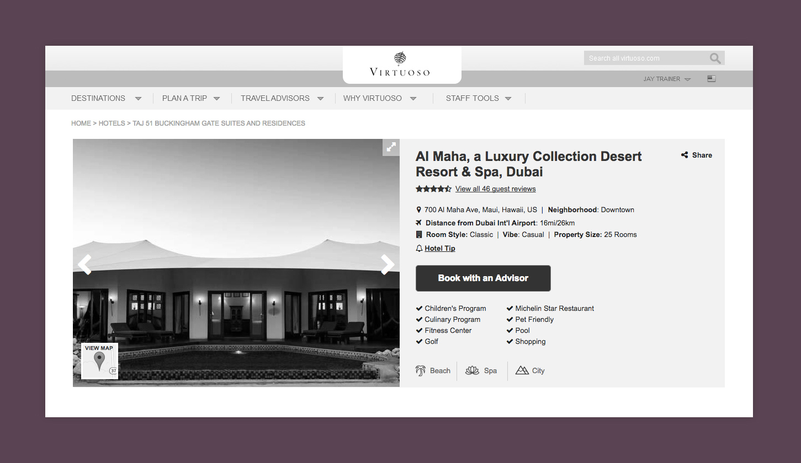
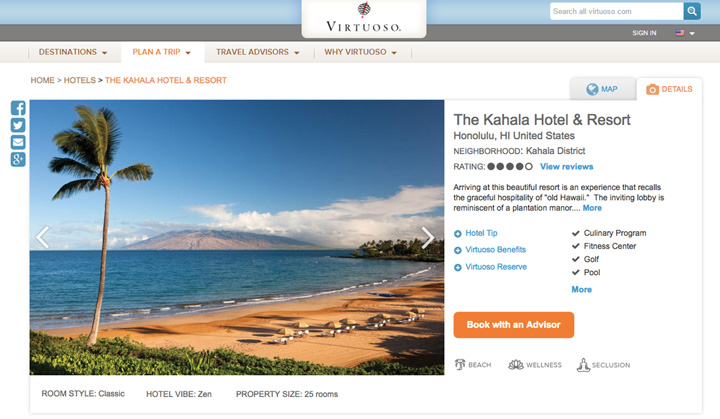
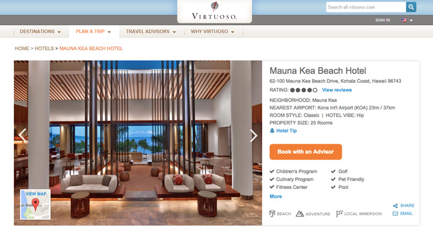
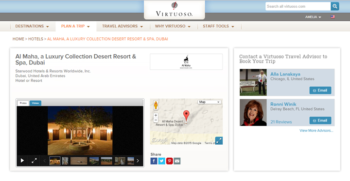

<div class="content-wrapper clearfix">

    <article class="content">

        <div class="row">
            <div class="col span_6 center less-space">
                <h1 class="detail">Hotel Product Page Redesign</h1>
                <div class="tagline">While migrating the Hotels product from another application, we were able to test options for a more user-centered design</div>
                
                <div class="caption">My initial proposal for the hotel page redesign</div>
            </div>
        </div>

        <div class="row">
            <div class="col span_2">
                <h2>User</h2>
                <p>Travel advisors finding hotels for their clients, or consumers doing research on their own.</p>
                
            </div>
            <div class="col span_2">
                <h2>User’s Goal</h2>
                <p>Skim available hotel details to determine if this property is right for them.</p>
            </div>
            <div class="col span_2">
               
                <h2>Business Goal</h2>
                <p>Redesign top of page to accommodate new hotel experience categories (such as “beach” or “adventure”).</p>
            </div>
        </div>
            
        <div class="row">
            <div class="col span_2 left">
                <h2>User Testing</h2>
                <p>We tested three layouts: Design A (tabbed interface), Design B (a later iteration of my concept) and Design C (the original).</p>
                <p>To test usability, we gave participants tasks leading them to interact with elements on the page so we could observe their ease in locating and using the controls.</p>
                <h2>Findings</h2>
                <p>Users found the slideshow arrows to be too subtle, and didn't find value in the new "hotel vibe" attribute. Overall, Design B had the highest rating when users were asked which design they preferred, and which design would encourage them to connect to a travel advisor. They also commented on ease of locating the map in Design B.</p>
                 <h2>My Role</h2>
                <ul>
                    <li>Competitive Analysis</li>
                    <li>UI & Visual Design</li>
                    <li>High Fidelity Prototyping</li>
                </ul>
            
            </div>
            <div class="col span_4">
                
                <div class="caption">DESIGN A: Tabbed design, created by another designer on the team</div>
                
                <div class="caption">DESIGN B: My Design</div>
                
                <div class="caption">DESIGN C: Existing Design</div>
            </div>
            </div>
                
        
    </article>
</div>
